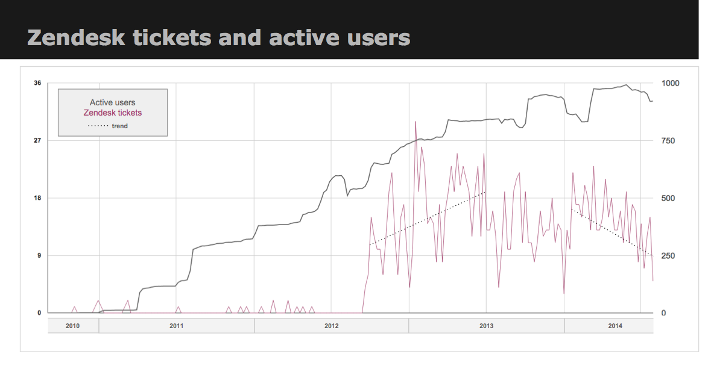
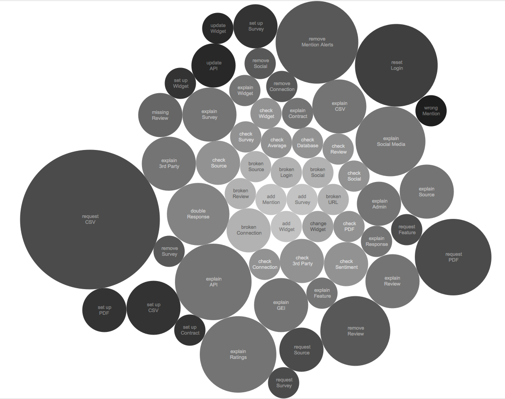
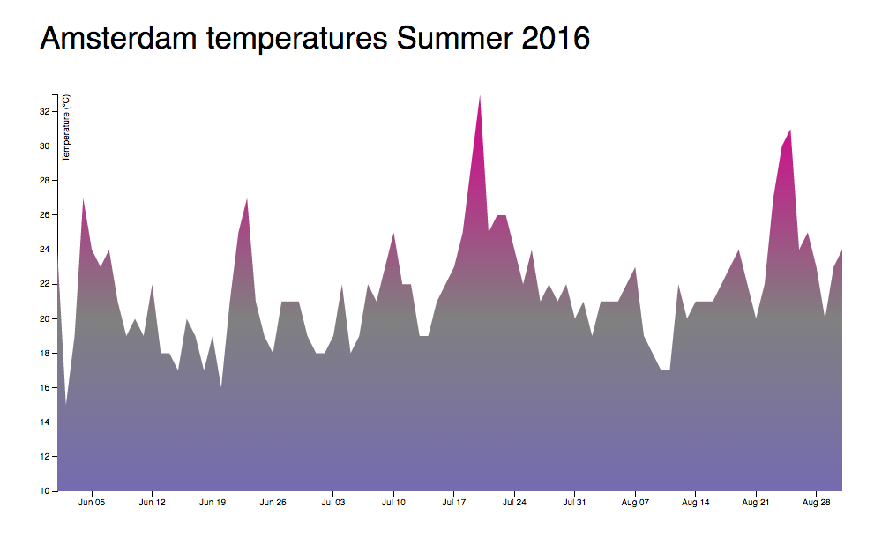
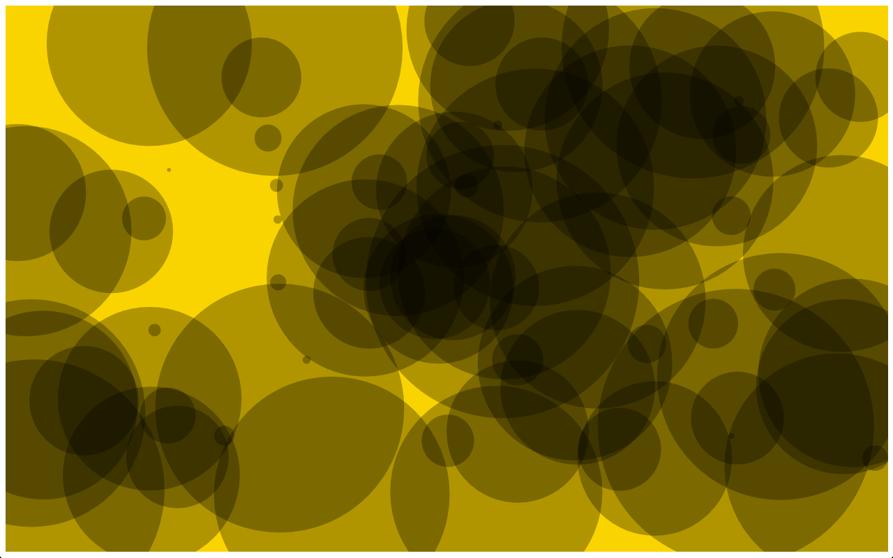
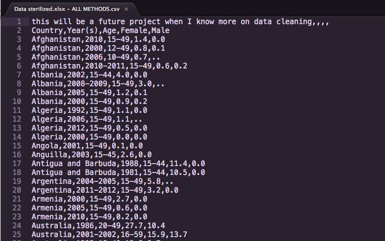
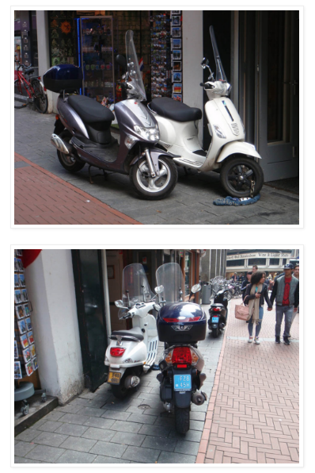

About
I used to play bass in Heavy Rock bands around the US. Thanks to Rails Girls and online learning I started working as a Support Engineer for a startup. There I got to use data and graphs in Exel and Tableau and wanted to know more about D3. I took courses online (great: Scott Murray and MIT), went to conferences and took workshops (favorite: Andy Kirk).
In music and making things to start you copy others that do stuff you like and then change it. So I thought this must work here too, making many mistakes on the way.


First
This one only for the pleasure of changing colors no data involved yet, wait for it to load and then move the cursor to paint:

Learned:
Watch where you serve the file that is being edited, I spend time wondering why nothing worked and it was just a duplicated file in another folder that was showing in localhost. Typos! It's really not 'stoke' or 'postition'.
Next:
- shorter loading time
- circles instead of bars
- make it a harp with sound?
*thank you cagrimmett
Second
Here are the temperatures of the last 3 months, as finding archival data was too timeconsuming I just populated the .csv by hand from Wunderground.

Learned:
When you stare blankly at the screen and the brain is fried, do take a break.
Next:
- an average temperature line
- rainfall, actual and average
- mouseover tooltip on the hottest days, record?
- how to get raw historical weather data
- try to use blue one day
*thank you d3noob
Third
Here I wanted to try to modify something I don't fully understand (boids?), but find intriguing to look at. Mesmerizing in fullscreen mode with Apollo 11 on headphones:
Mission Control

Learned:
Use the console Luke! Look in Network, when 'Status Code:304 Not Modified' you are editing the wrong file. Again.
Next:
- change the colors of the circles by mouseover
- can this be attached to mp3's?
- stop staring, commit and push
*thank you jfire
Fourth
I have Illustrator files that I sent to a steel lasercutter for Jewelry, this would be interesting to import as an SVG and work with.
Learned:
coming
Next:
- mouse over transitions
-
-
*thank you delimited
Fifth
I downloaded a UN data set about contraception use wordwide and extracted the columns male and female sterilization. Just by noticing numbers that stood out I wanted to look up certain countries and learned about how they use it in ways that have little to do with limiting family size and more with reducing unwanted types of population.

Learned:
sketch coming
Next:
- how to clean up empty rows
- combining different year ranges without loosing data
- links to the contries use of sterilization, tooltip?
Sixth
As Mr McCandless says: go for data that stupefies, bewilders, or frustrates and that is the situation of Scooters on the bike paths in Amsterdam for me. How can it be that identical looking machines go (often at the same speed) either on the street or next to the many bikes in the city. My thought is to show the siluettes of both scooter versions and list the differences, then show a map of density over time. CBS has rather detailed datasets free to download.

Learned:
sketch coming
Next:
- get data on scooter variations
- how best to show dutch and english versions
- find 1974 law that opened the loophole
- future development with coming Millieuzone?
* photo